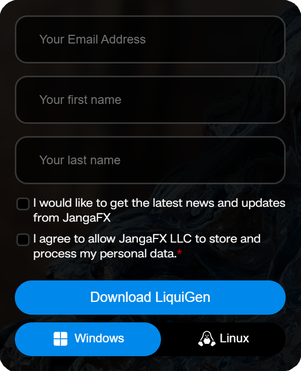
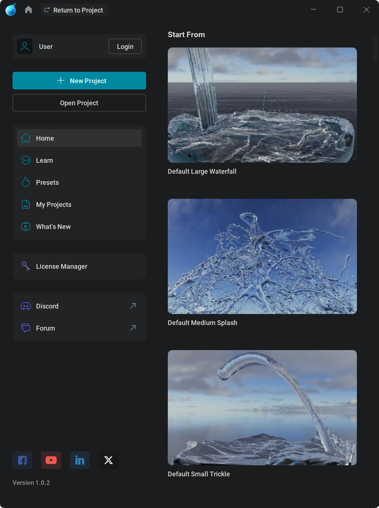
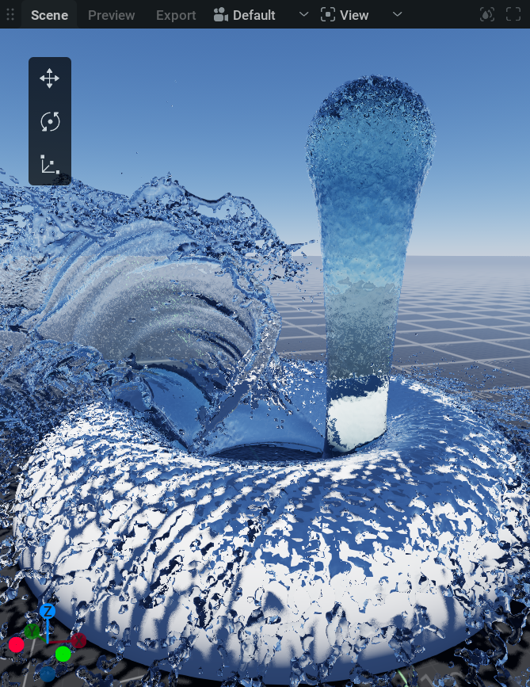
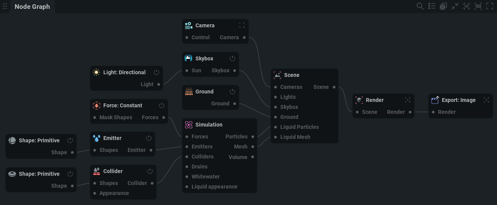
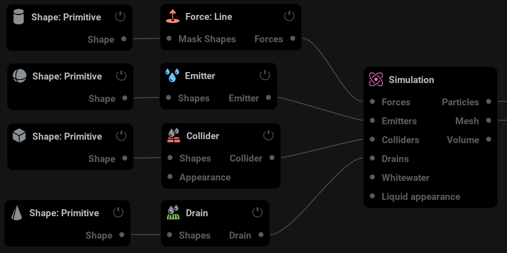
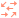
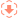
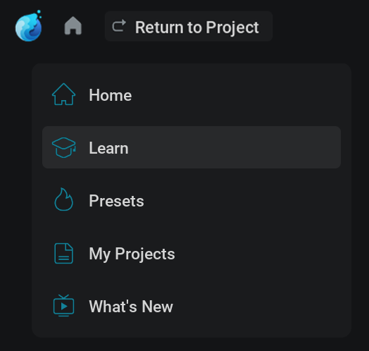

Getting Started#
Installing LiquiGen#
Download#
If you have a license already go to https://jangafx.com/software/liquigen/download/
Specify your desired release on the left (latest by default) and click the blue download button on the right.
To get your trial go to https://jangafx.com/software/liquigen/try
{kind=link}

There you’ll be greeted by a form!
Your e-mail address and the second checkbox (which allows us to store the information given in the form) are required.
After filling out the form, pick your operating system at the bottom (Windows or Linux) and click the Download LiquiGen button.
The liquigen-latest.exe file will be downloaded to your hard drive.
Installing#
Double click the .exe file.
Accept the agreement.
Click Next, Next, Install, Finish
If you left Launch LiquiGen checked, the software will boot right away!
If you unchecked Launch LiquiGen you can launch the software by double-clicking on the desktop shortcut.
If you also unchecked Create a desktop shortcut you can launch LiquiGen by double-clicking on the LiquiGen.exe file in the LiquiGen folder usually found in C:/Program Files/JangaFX
Licensing#

After installation is complete, run liquigen and in the Help menu, click License Manager… to launch it.
Within this license manager, enter your license key in the ‘Key’ text box.
Then press the Activate Key button. The status text will change from Deactivated to Activated if the license was activated successfully.
If any errors occur they will appear in yellow on the right. If you cannot get your key to activate, email us at support@jangafx.com using the blue Contact Support button in the top right corner with a screenshot of the errors.
If you don’t have a license key you can purchase one from our pricing page on our website. You can go there using the blue “Purchase A License” button!
Using LiquiGen#
Welcome to liquigen!
In this section, you will learn the basics of our software to get started making amazing liquid simulations for your games or movies.
Project Manager#
{kind=link}

When you first open the software you’ll see the project manager. You can always get to or leave this screen using the home icon
 in the top left corner.
in the top left corner.The Project Manager is where you can quickly get to presets or your project files by picking a category on the left.
Presets are, .liquigen, read-only, project files shipped with liquigen.
They can serve as a nice starting point for the simulations you want to create or as a reference to learn from.
When not using a preset, make sure you start from the correct scale template to get to your desired results the best and easiest way!
Presets are stored in the presets folders within the LiquiGen installation folder. (usually C:/Program Files/JangaFX/liquigen)
Note that there is no difference between a preset and any other .liquigen file.
If you can’t find the project you are looking for, you can click the Open Project button to manually search for your .liquigen file using the file browser.
New Project will load the default preset. Like any preset everything about this can be altered so don’t worry if it doesn’t look like what you are aiming for.
You can save your presets with Ctrl+S or by going to File > Save
User Interface#
Let’s have a look at the main user interface!
As you can see it is subdivided into four sections, the viewport, the timeline editor, the node editor and the properties panel.
All of these can be scaled to your liking, by holding down
 and dragging the edges of the section, or viewed full screen by clicking the Toggle panel fullscreen button
and dragging the edges of the section, or viewed full screen by clicking the Toggle panel fullscreen button  in the top right corner of each section.
in the top right corner of each section.
Viewport#
{kind=link}

This is where you can view your simulations, shapes, forces or anything that’s in the scene.
You can move the camera around by holding down  in the viewport and pressing Alt to pan, Ctrl to zoom and Shift to tilt.
in the viewport and pressing Alt to pan, Ctrl to zoom and Shift to tilt.
If you are used to another control scheme, in the top menu bar go to Settings>Preferences then in the Camera section you can change the Control Mapping to your liking.
On the top of the viewport, you will find a couple of tabs and dropdown menus:
Scene is the default tab where you can view and manipulate everything.
Render is the tab where you can preview what will be exported.
Export is the tab where the exported images can be viewed.
Right next to the Export tab is a dropdown menu to select the
 camera you want to look through.
camera you want to look through.The
 View dropdown menu will give you a list of things to show or hide in the viewport.
View dropdown menu will give you a list of things to show or hide in the viewport.If you are missing or annoyed by something in the viewport this is the first place to look!
Timeline Editor#

This is where time is visualized from left to right.
You can play or pause the simulation using
 or spacebar
or spacebarYou can reset the simulation (revert to the beginning of the timeline) using
 or r
or r
If you forget a shortcut you can hover your mouse over a button to see its shortcut key. Or go to the Shortcuts section in Settings>Preferences.
When playing from the start you can see a blue line moving. This indicates what the current time on the timeline is.
The numbers next to the buttons show the current time in frames and seconds. When clicking on the left one of these, the timeline will toggle from showing frames or showing seconds.
Note that a simulation always calculates from one frame to the next. This means you can’t play it backward or scrub through it.
Node Graph#
{kind=link}

This is where the building blocks to create the simulation are managed.
The separate modules you see are called nodes. You can think of these as little machines with their own unique tasks. The machines combined are the factory that produces the end product.
The nodes are connected with wires passing data from one node to another.
To navigate around the Node Graph hold the  button and drag. You can use the scroll wheel to zoom in and out.
button and drag. You can use the scroll wheel to zoom in and out.
If you get lost you can use the  button in the top right corner to recenter the nodes and the
button in the top right corner to recenter the nodes and the  button to reset the zoom.
button to reset the zoom.
Select a node with
Box select a node by holding the
and dragging a box around the nodes.Delete a node by selecting it and then pressing the Delete key.
Copy and paste nodes with Ctrl + C and Ctrl + V.
Move nodes by holding the Left Mouse Button and dragging.
Disable a node using the on/off button
 in the top right corner of the node.
in the top right corner of the node.Connect nodes by
clicking and dragging from the connection pins on the sides of the nodes. Or by selecting multiple nodes and pressing Ctrl + LThe connection pins always state the node or node category it needs to be connected to.
Create a node by right-clicking in the node graph and selecting a node from the menu. Or by dragging from a connection pin to somewhere in the node graph. This way you’ll get a menu with all the nodes available for that type of connection.
Properties Panel#

This is where the settings are for the selected node. (Or multiple nodes when selecting nodes of the same type.)
Node Details: This tab shows all the parameters for the selected node.
Every node has its own array of tabs organizing the parameters.
When looking for a specific parameter, you can easily find it using the Parameter Palette which opens by pressing Ctrl + P
You can change a parameter by either using
on the value, typing in a new value, and pressing Enter or clicking and dragging the value slider.
You can also apply math within these text boxes. For example, typing 4*7/2+6-2 and pressing Enter will put a value of 18 in the parameter. This can be helpful for quickly multiplying a value or reducing it by half for example.
Some parameters aren’t values but dropdown menus which can be opened by clicking on them with the
. Then you can pick an option from the menu.There are also check boxes that can be simply clicked on or off.
Try leaving your cursor on a parameter name. This will show a text box with information on what the parameter does!
The revert icon
 on the right side of the parameters will reset the parameter to its default value.
on the right side of the parameters will reset the parameter to its default value.Favorites: This tab shows all the parameters that are marked as favorites. You can do this with any parameter from the Node Details tab by checking the star icon
 right next to it.
right next to it.Timeline: This tab shows all the parameters with keyframing enabled. To learn about keyframes check out our Keyframe Animation page.
Randomized: In this tab you can see and adjust the parameters selected for randomization. This can be used to create variations of your simulation. To choose a parameter for randomization Shift +
click on the  icon on the left. Randomized parameters are marked with the
icon on the left. Randomized parameters are marked with the  icon. For more information check out our Randomization section!
icon. For more information check out our Randomization section!
Simulation#
The first thing to note when simulating is that you want to work in a realistic scale. You can see the scale of things by looking at the measurements indicated on the groundplane. Make sure you’re not simulating a 10cm long whale or a 100m tall bucket if you want things to look right. To get a good starting point, you can pick a scale template in the Project Manager!
In LiquiGen, liquids are simulated using a “hybrid solver, “ meaning particles and voxels are used to simulate the results.
Particles are points in 3D space and voxels are like three-dimensional pixels dividing 3D space into a grid.
The liquid is made up of particles that go through a process called “meshing” to produce the liquid mesh which is then rendered using a liquid shader to appear like (by default) water.
In the  Simulation node, the liquid appearance is specified by tweaking the meshing in the Mesh tab, and the shader settings in the Liquid Appearance tab.
Simulation node, the liquid appearance is specified by tweaking the meshing in the Mesh tab, and the shader settings in the Liquid Appearance tab.
To see the particles instead of the liquid mesh open the Diagnostics panel by clicking the  icon in the top right corner of the viewport and uncheck
icon in the top right corner of the viewport and uncheck  Liquid Mesh and check
Liquid Mesh and check  Liquid Particles.
Liquid Particles.
The particles define the liquid, if the particles move the liquid moves. The voxels the particles move through calculate and store the velocities, pressure, divergence, and force fields informing the particles where to move. The particles are like chess pieces that can be anywhere on the board but get specific directions within specific checkers.
LiquiGen is a sparse solver. The amount of voxels is not fixed. Voxels and particles will be created and destroyed based on where the liquid is. This means the solver doesn’t waste computing resources in regions with no liquid to simulate. When it comes to memory, however, the solver needs to know how many particles and voxels it can use at a maximum which is defined in the  Simulation node in the Resources tab.
Simulation node in the Resources tab.
The voxel size, found in the  Simulation node in the Simulation tab, determines the size of the smallest possible detail in your simulation and therefore directly affects the realism and level of detail in the simulation. It also directly affects the simulation speed as more voxels and particles take longer to compute.
Simulation node in the Simulation tab, determines the size of the smallest possible detail in your simulation and therefore directly affects the realism and level of detail in the simulation. It also directly affects the simulation speed as more voxels and particles take longer to compute.
Transforming#
Most object/nodes can be moved around in the scene using the position, rotation, or scale parameters or using the manipulators.
A manipulator will pop up in the viewport when selecting a moveable node.
There are three manipulators, translate, rotate and scale.
They can be selected with the hotkeys Q, W, and E or with the manipulator switcher in the top left corner of the viewport. (if you don’t see the manipulator switcher, make sure it’s checked in the  View dropdown menu.)
View dropdown menu.)
To control the manipulator handles, hold  and drag.
and drag.
Nodes#
Let’s have a look at what the most important nodes are doing.
 Shapes#
Shapes#
Shapes can be plugged into different types of nodes and serve all sorts of different purposes, being the emission source, a collision object, a drainage object, or a mask for a force field.
The  Shape: Primitive node has a lot of options for basic shapes in the Type dropdown menu.
Shape: Primitive node has a lot of options for basic shapes in the Type dropdown menu.
If you want to use a custom 3D model as a shape, you can use the  Import node.
Import node.
 Emitter#
Emitter#
The Emitter node is where the liquid particles are generated.
The amount of particles is multiplied by a couple of factors:
The shape plugged into the emitter: This defines where the particles can spawn. Bigger shapes emit more liquid particles.
The emitter settings: For example, try adjusting the Volume flow rate parameter in the Behavior tab. Higher values give a stronger flow of liquid as it generates more particles.
The voxel size: The particle density is derived from the voxel size. A smaller voxel size will result in more voxels fitting into the emission shape and more particles.
{kind=link}

Collider#
{kind=link}
This will make the liquid collide with the shape that’s plugged into the node.
For example, if you want water to pour over a sphere, the  sphere shape needs to be connected to a Collider node which needs to be connected to the
sphere shape needs to be connected to a Collider node which needs to be connected to the  Simulation node.
Simulation node.
 Force#
Force#
This is a category of nodes that will alter the movement of liquid. For example, a 
{kind=link}
Force nodes need to be plugged into the  Simulation node to affect the simulation.
Simulation node to affect the simulation.
If you want a force to only be applied in a certain area, you can mask its effect by connecting a shape to the Mask Shapes input pin on the left of the force node.
The default preset uses a 
{kind=link}
 Drain#
Drain#
This node will remove all liquid particles within the shape plugged into the node.
This can be useful for saving resources by removing unnecessary liquid particles, such as particles that are not visible to the 3D camera you intend to use.
Another use case is, of course, a drain!
 Simulation#
Simulation#
This is where most global settings are found. For example, you can change the physical properties of the liquid in the Simulation tab and the shading in the Liquid Appearance tab to simulate other liquids like honey, slime, or milk.
There can only be one simulation node.
Multiple Emitters, Forces, Drains, and Colliders can be connected to the pins on the left side of the node.
 Light#
Light#
A category of nodes that, as the name suggests, light up the scene.
Try adjusting the intensity parameters to see what they do!
Light nodes need to be connected to the Lights input pin on the  Scene node.
Scene node.
 Point is like a light bulb and will emit light from one adjustable point in space.
Point is like a light bulb and will emit light from one adjustable point in space. Directional Emits parallel light rays from one angle (like the sun). If you want to use this light as a sun light, you should plug it into the Sun input pin on the
Directional Emits parallel light rays from one angle (like the sun). If you want to use this light as a sun light, you should plug it into the Sun input pin on the  Skybox node.
Skybox node.Area is like a light panel emitting light from an adjustable plane in space.
{kind=link}
Skybox#
This controls the type of sky in your scene. There are a few options here:
None will turn the sky off resulting in a black background.
Atmosphere is the most advanced one mimicking a real sky. The angle of the connected sun (directional) light will affect the sky colors.
HDRI will let you import an HDRI map to light your scene.
 Ground#
Ground#
This is where all the settings are related to the ground plane you see in the scene.
By default, it’s set to Units so you can see what type of scale you are working on.
Note that the liquid always collides with the ground, even when the node is turned off!
 Scene#
Scene#
This node serves as the hub to which all the elements of the 3D scene are connected.
 Render#
Render#
Rendering is when the 3D elements in your scene are turned into an image on your screen.
The settings for this process are found in this node.
Liquigen has two rendering modes, the Rasterizer and the Path Tracer:
Rasterizer: A real-time rendering method with simplified graphics. This one is used by default.
Path Tracer: A more physically based rendering method that simulates the light rays giving a more realistic result. This method takes longer to render and is usually only enabled once you’re happy with the simulation and want to export realistic images out of LiquiGen.
The Path Tracer can be turned on and off by selecting Path Tracing in the  View dropdown menu in the Viewport. Or by pressing Ctrl + T
View dropdown menu in the Viewport. Or by pressing Ctrl + T
Turning the Path Tracer off means turning the Rasterizer on.
 Export: Image#
Export: Image#
This node lets you export your scene to image files and holds all the related export settings for that like what part of the simulation to export, what renderpasses to export, which rendering mode to use, and how to render shapes.
You can export your scene to a Flipbook or a Sequence:
Flipbook is a format used in games to get all frames into one image texture which is more performant.
Sequence allows you to export a sequence of image files, which is useful for VFX or for creating a video.
To export, you need to specify where you want the image files to be stored on your computer using the Directory parameter in the Export tab then click the blue Export Now button.
You can create multiple export nodes and do multiple exports at once by selecting them and selecting Export Selected from the right-click menu in the Node Graph.
 Camera#
Camera#
This is what you’re looking through when rendering the scene.
You can use a camera by selecting it in the  camera dropdown menu on top of the viewport. Or by selecting the Camera node and clicking the Activate button in the General tab.
camera dropdown menu on top of the viewport. Or by selecting the Camera node and clicking the Activate button in the General tab.
In the Transform tab, you can specify the position and rotation of the camera. But you can also do this by navigating around the viewport when looking through your camera.
When you are happy with the camera position you can lock the camera in the General tab so you can’t accidentally move it.
The Display Resolution parameter in the Display tab specifies the aspect ratio of the camera. You can visually see this in the viewport. Don’t forget to set this to the same aspect ratio as the  Export: Image node to get correct results.
Export: Image node to get correct results.
The Field Of View parameter in the Display tab will specify the angle at which objects are visible to the camera. Adjusting this is like zooming with a telelens.
The camera selected in the Camera tab in the
 Export: Mesh#
Export: Mesh#
With this node, you can export your liquid mesh as a 3D file format for use in other software like Maya or Blender.
The
Continuing#
You should now have a basic overview of how to use LiquiGen.
If you want more specific information on nodes, user interface, settings, or how to do particular things please check out our References page.
{kind=link}

If you’re new the Learn tab in the Project Manager and our YouTube channel are good places to visit.
You can also learn a lot by opening the presets shipped with LiquiGen and having a look at how they were set up.
Another great way of learning is to just try everything out! Since LiquiGen simulates so fast it’s often easy to see what a certain parameter does by just changing its value.
Don’t forget you can leave your cursor on any parameter name to get an explanation of what it does.
If you want to showcase something or ask for help, don’t hesitate to join our discord server
Good luck learning LiquiGen,
we can’t wait to see your splashingly epic results!